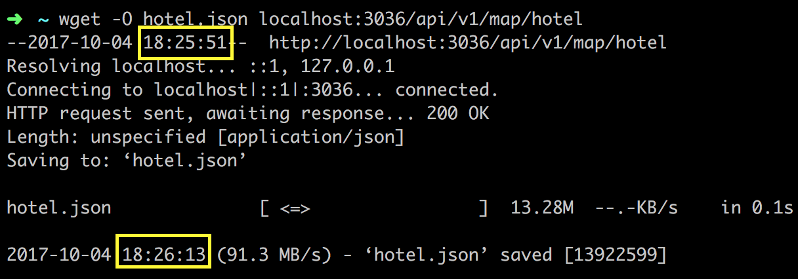
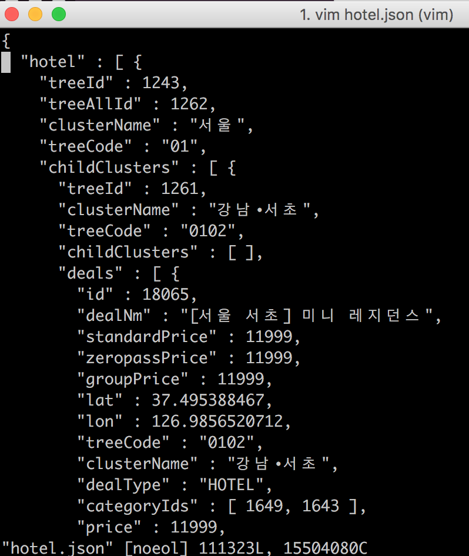
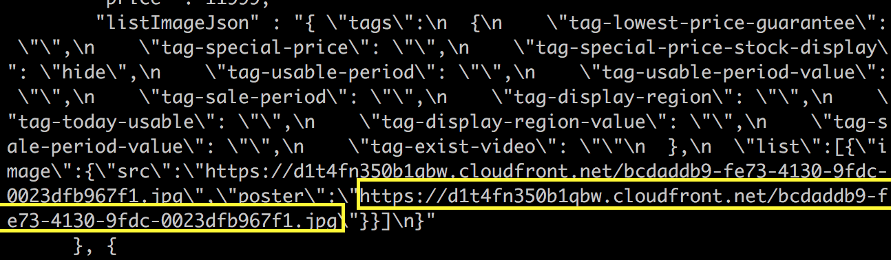

문제점

응답하는데만 16초가 걸렸고 트래픽은 15MB 남짓…
사용자가 조건을 바꿔서 검색을 한다면 데이터 광탈범이 될 가능성이 다분한 상황이었다.
서버에서 16초가 걸리니 로컬에서는 20초 이상이 걸리는 상황이었다.
15MB의 문자열을 파싱하기에는 무리였는지 크롬 조차 파싱하는 걸 포기하였다.

32초에 요청하고 49초에 응답을 받았으니 17초 소요
응답값 사이즈는 15,504,080Byte, 약 15Mb.
17초 중에 응답을 15MB를 내려받는 건 1~2초 내에 끝나서 대부분이 쿼리 실행 및 자바 객체와 매핑하는데 시간을 소요했을 것으로 추정.
원인 파악 및 해결
쿼리 튜닝
호텔 실제 가격 주입 부분은 다른 곳에서도 사용 중이기도 하고 딜 목록 조회가 제일 시간이 오래 걸려서 해당 쿼리부터 손보기로 했다.

실제로 필요한 건 특정 필드 뿐인데 모든 필드를 다 긁어오고 있어서 쿼리 실행속도가 느려진 것임.
따라서 필요한 필드만 불러오게 끔 코드를 수정하였다.
데이터 다이어트(용량 줄이기)

이 응답값에는 세 가지 문제점이 존재한다.

따라서 JSONParser 쪽을 손 봐서 공백을 없애도록 수정하였다.
하지만 공백을 줄여보아도 1MB 남짓의 용량만 줄어들었다.

treeAllId라던지, clusterName이나 빈 배열 등등 다른 값들을 가지고 유추할 수 있는 값들을 제거하였다.
하지만 크게 효과는 없었다.

이미지의 URL을 담고 있는 컬럼을 불러와서 필요한 정보만 뿌려주는 게 아니라 모든 데이터를 가공없이 뿌려주고 있었다.
이 컬럼의 데이터가 하나의 딜에 대한 데이터의 3/4 이상을 차지하고 있었다.
빠른 응답속도 보장
클러스터와 딜을 함께 내려주다보니 초기에 유저가 기다려야하는 속도는 5~7초 남짓으로 줄어들긴 했지만 여전히 느리다.
굳이 딜 목록까지 내려 줄 필요가 없다고 판단이 들어서 클러스터(갯수 포함) 따로 딜 따로 내려주게 끔 API를 두 개로 분리하였다.
클러스터를 그리기 위한 클러스터 API는 응답 속도가 1초 남짓이라 유저가 불편을 느끼지 못할 수준이다.
유저가 방심(?)하는 사이에 몰래(?) 딜을 뿌려주는 API를 호출하고 있으면 웬만한 유저들에게는 불편함을 주지 않을 것이다.
차후 개선 사항 (시간 문제 및 공수와 효율성 문제)
- 2MB로 줄였다 하더라도 필터를 계속해서 바꾸다 보면 유저 입장에서는 부담되는 용량일 수도 있다.

- 딜을 뿌리는 API가 여전히 느리다. (5~7초)
데이터가 많아지면 이 속도는 더 느려질 게 뻔하다.
따라서 캐싱을 해야하는데 어떻게 캐싱할 것인지 전략을 세워야한다.
어디서 병목이 일어나는지 먼저 판단을 한 후에 어떤 데이터를 캐싱할지부터 알아내야할 것 같다.
또한 따로 지도 API 전용 서버를 만들어서 좀 더 성능을 올리는 방법 등등도 있을 것 같다.